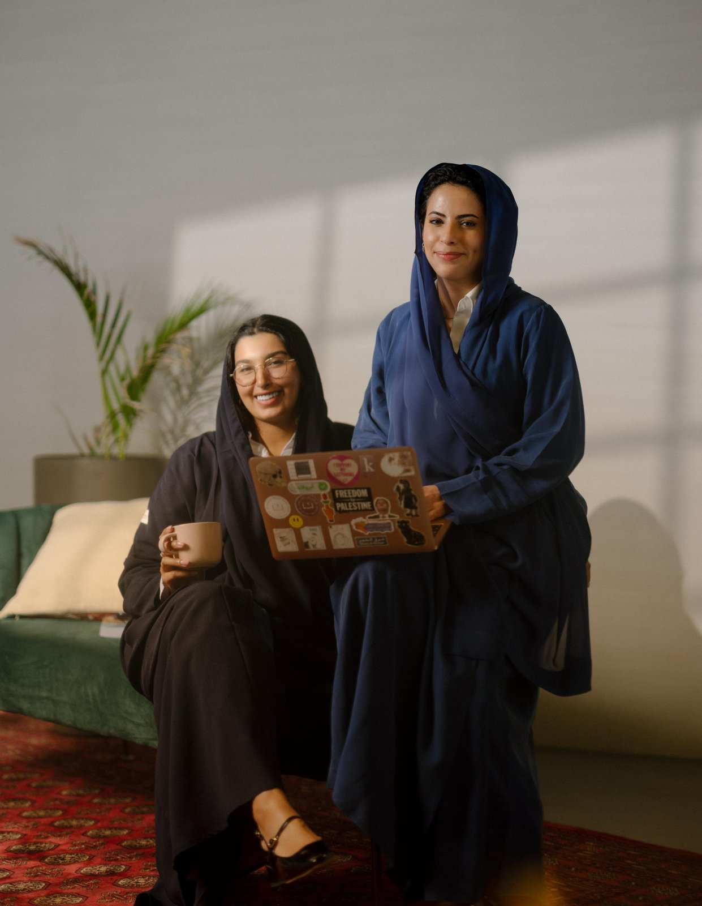
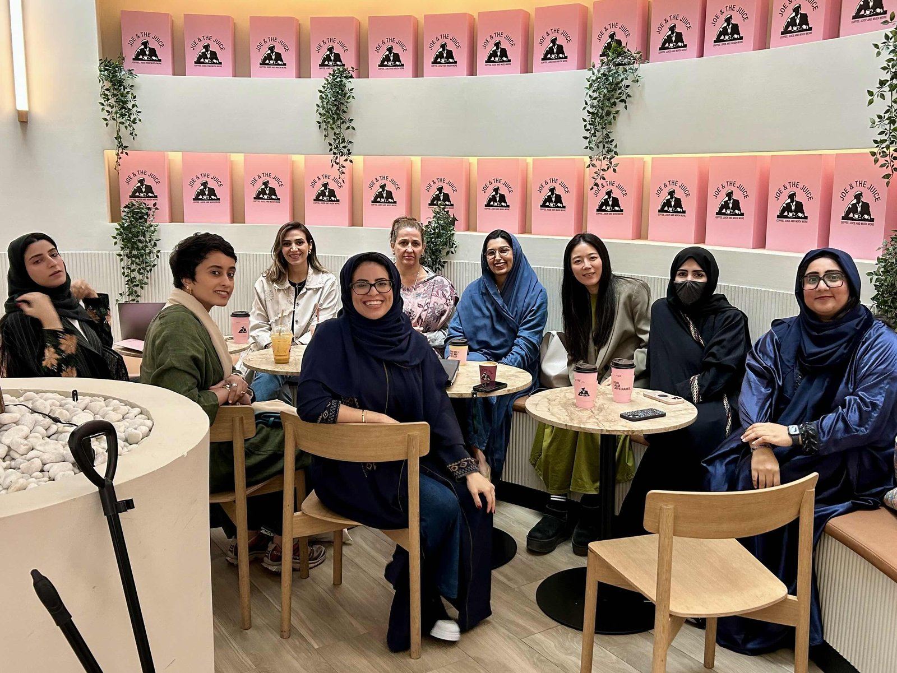
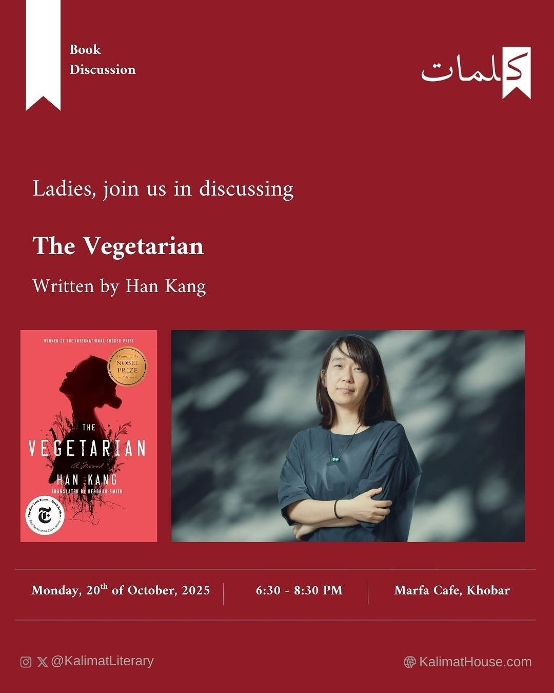
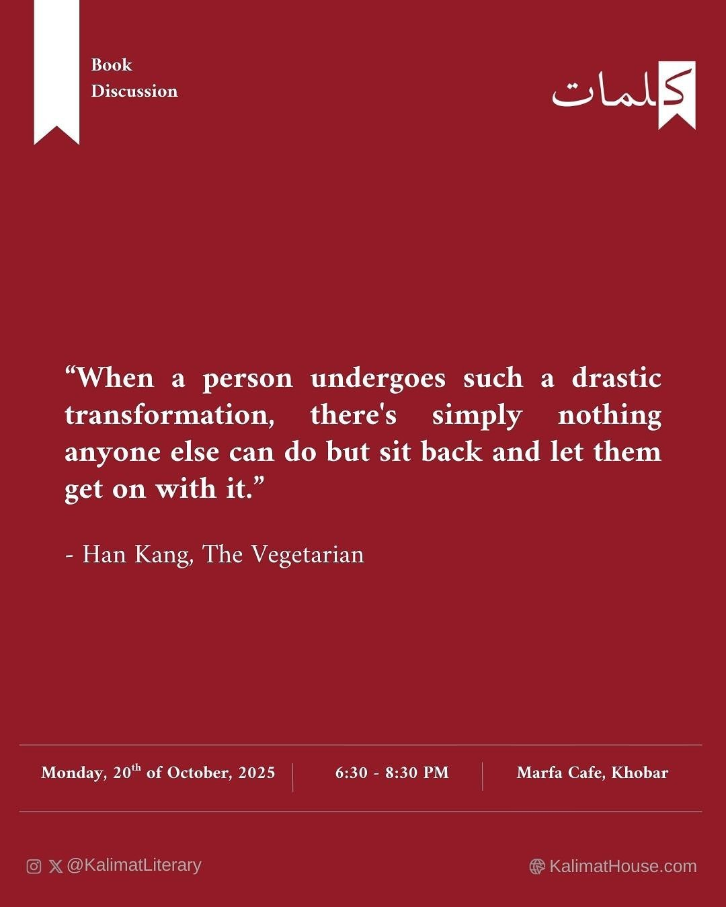

칼리마트 하우스, 언어와 문화로 사회를 잇다

▲ 칼리마트 하우스 설립자 안팔 K. 알하마드, 하이파 A. 알오와인 — 출처: 하이파 A.알오와인 제공
사우디아라비아의 문화 컨설턴시 칼리마트 하우스(Kalimat House)는 예술과 사회를 잇는 대화를 만들어가는 여성 주도 플랫폼이자 문화공간이다. '칼리마트(Kalimat)'는 아랍어로 '단어들'을 뜻하며, 언어와 대화를 통해 사회를 변화시키겠다는 철학을 담고 있다. 기관은 문화전략가 안팔 K. 알하마드(Anfal K. AlHammad)와 사회개발전문가 하이파 A. 알오와인(Haifa A. AlOwain)이 공동으로 설립했다. 두 사람은 사우디 문화부와 국제 예술기관을 넘나들며 문화정책과 사회 참여, 여성의 창의적 역량 강화를 결합한 다양한 프로젝트를 이끌어왔다.
이들의 문학 프로그램인 칼리마트 리터러리(Kalimat Literary)는 2014년에 설립된 여성 중심 문학 커뮤니티로 문학과 문화에 열정을 지닌 사우디 여성들을 위한 열린 독서 네트워크로 성장했다. 2024년 11월에는 디리야의 부자이리 테라스(Bujairi Terrace)가 칼리마트 하우스에 프로그램 운영을 공식적으로 의뢰·지원하면서 아랍어와 영어 두 언어 그룹으로 운영되는 여성 북클럽이 출범했다. 이에 따라 비아랍어권 사람들도 참여할 수 있게 됐다. 현재는 세션마다 약 20명 안팎의 회원이 참여하며 매주 혹은 격주로 정기적인 모임을 이어가고 있다. 회원들은 서로를 '칼리마티스타스(Kalimatistas)'라는 애칭으로 부르며 언어와 문화의 경계를 넘어 사유와 연대를 이어간다. 통신원은 2024년 부자이리 론칭 세션부터 멤버로 참여해왔으며 사우디 여성 독서 문화가 지역 곳곳으로 퍼져가는 과정을 가까이에서 지켜보고 있다.

▲ 칼리마트 영어 북클럽 모임 — 출처: 통신원 촬영
알코바르 사우디 여성 북클럽 모임, 『채식주의자』를 통해 만난 한국
사우디 동부 지역의 해안 도시이자 현대적 문화 공간이 활발한 알코바르(Al Khobar)의 마르파 카페(Marfa Cafe)에서는 칼리마트 리터러리 여성 북클럽이 한국 작가 한강의 『채식주의자(The Vegetarian)』를 주제로 모임을 열었다. 한강 작가가 2024년 노벨문학상을 수상한 이후 사우디에서도 한국 문학에 대한 관심이 눈에 띄게 높아졌다.


▲ 칼리마트 리터러리 『채식주의자』 북토크 안내 및 인용 카드 — 출처: 칼리마트 북클럽 인스타그램(@kalimatliterary)
이날 모임은 단순한 독서 토론이 아니라 여성의 내면과 사회적 억압을 서로의 문화와 겹쳐 읽는 자리였다. 참가자들은 아랍어와 영어 번역본을 함께 읽으며 언어의 차이에 대해 이야기를 나눴다. 다수는 "아랍어 번역이 영어보다 더 강렬하고 폭력적인 언어를 사용해 작품의 긴장감과 권위를 강화한다."고 말했다. 또한 "해당 소설이 그동안 접해온 한국 사회의 이미지와는 전혀 다른 시각을 보여준다."며 "한국 문학의 새로운 면을 발견했다."고 평가했다. 다른 이들은 『채식주의자』가 단순히 식습관의 문제가 아니라 변화의 은유적 도구로 사용된 점을 흥미롭게 봤다. 주인공이 적극적으로 말하지 않지만 그 침묵이 주변 사회에 큰 파장을 일으킨다는 점에 주목하며 주체성의 결여(lack of agency)가 오히려 작가가 선택한 문학적 장치라는 의견이 이어졌다.
도서 제목에 대한 논의도 오갔다. 일부는 "이 작품이 정말 채식주의에 관한 이야기일까?"라며 식습관보다 거부와 해방의 은유로서의 채식에 주목했다. 한 참가자는 "고기를 거부한다는 것은 단순히 음식의 문제가 아니라 세상이 강요하는 질서와 폭력 자체를 거부하는 행위처럼 느껴졌다."고 말했다. 특히 형부에게 이용당하는 장면에는 많은 참가자들이 감정적으로 반응했다. 여성 독자들은 "여성의 몸이 타인의 욕망에 의해 소비되는 장면이 불쾌했다."며 "그것이 아랍 사회의 단절(disconnect)과 집착(infatuation)을 떠올리게 했다."고 말했다. 남편 인물에 대해서는 두 가지 해석이 엇갈렸다. "그가 아내를 통제하기 쉬운 존재로 여긴 점이 잔혹하다."는 시선과, "자신과 비슷한 수준의 여성을 원했다는 점은 솔직하지만 감정이 결여된 냉정함을 보여준다."는 의견이 함께 나왔다. 가족 내 폭력은 새로운 것이 아니라 익숙한 억압의 반복으로 읽혔다. 그러나 그 안에서 영혜의 변화는 순종이 아닌 저항의 형태로 인식됐다.
사우디 여성의 시선으로 한국 문학을 다시 해석하다
주인공이 나무로 변하는 상징에 대해서도 활발한 대화가 이어졌다. 참가자들은 "그 장면이 한국문화에서 죽음을 의미한다는 것을 몰랐다."고 말하며 흥미로워했다. 한 참가자는 "죽음이자 해방, 그리고 자연으로의 귀환이라는 해석이 인상적이었다."며 인간의 폭력과 욕망에서 벗어나 순환과 귀의로 이어지는 동양적 세계관에 대해 이야기했다. 참가자들은 사우디 문화에 빗대어 "그렇다면 우리는 죽으면 대추나무가 될까, 사막의 모래가 될까?"라며 토론에 열기를 띄었다. 후반에는 『채식주의자』가 서구 문단에서 큰 호평을 받은 이유에 대한 논의도 이어졌다. 일부는 "서구 사회가 이 작품을 아름답게 붕괴되는 동양 여성의 이야기로 소비해왔다."며 "그런 해석이 때로 오리엔탈리즘적 판타지로 이어질 수 있다."고 지적했다. 작품 속 폭력과 성적 학대 장면이 불쾌했다는 반응도 있었지만 "그것이 여성의 몸이 욕망의 대상으로 소비되는 현실을 드러내는 장치라는 점에서 문학적 설득력이 있다."고 평가하는 참가자도 있었다.

▲ 아랍어로 번역된 『채식주의자』 표지 — 출처: 한강 홈페이지
한편 현지 영문 매체 《Arab News(아랍 뉴스)》는 최근 서평 기사에서 알코바르에서 열린 칼리마트 북클럽 모임을 언급하며 "사우디 독자들이 아랍어 번역판을 원문에 더 가깝게 느꼈다."고 전했다. 해당 매체는 "한강의 『채식주의자』가 인간과 자연, 침묵과 저항의 경계를 섬세하게 탐구하는 작품"이라고 평했다. 토론이 끝난 뒤 참가자들은 "한국 사회를 보다 깊이 이해할 수 있는 다른 문학 작품을 추천해달라."고 통신원에게 요청했다. 또한 "한국 작품을 한국인과 함께 토론할 수 있어서 매우 뜻깊었다."며 감사의 마음을 전했다. 사우디 독자들은 낯선 문화에서 오는 새로움뿐만 아니라 그 안에서 발견되는 정서적 동질감에도 깊이 공명하고 있었다. 한국 문학을 매개로 한 이번 북클럽 모임은 두 문화가 서로의 언어로 여성과 사회의 억압, 그리고 인간의 내면을 성찰하며 문학이 언어를 넘어 문화로 이어지는 교류의 장을 형성했다.
사진 출처 및 참고자료
통신원 촬영
하이파 A.알오와인 제공
칼리마트 북클럽 인스타그램(@kalimatliterary), https://www.instagram.com/kalimatliterary/
한강 홈페이지, https://han-kang.net/The-Vegetarian-Arabic
《Arab News》 (2025. 10. 24). Book Review: 'The Vegetarian' by Han Kang, https://arab.news/c67th